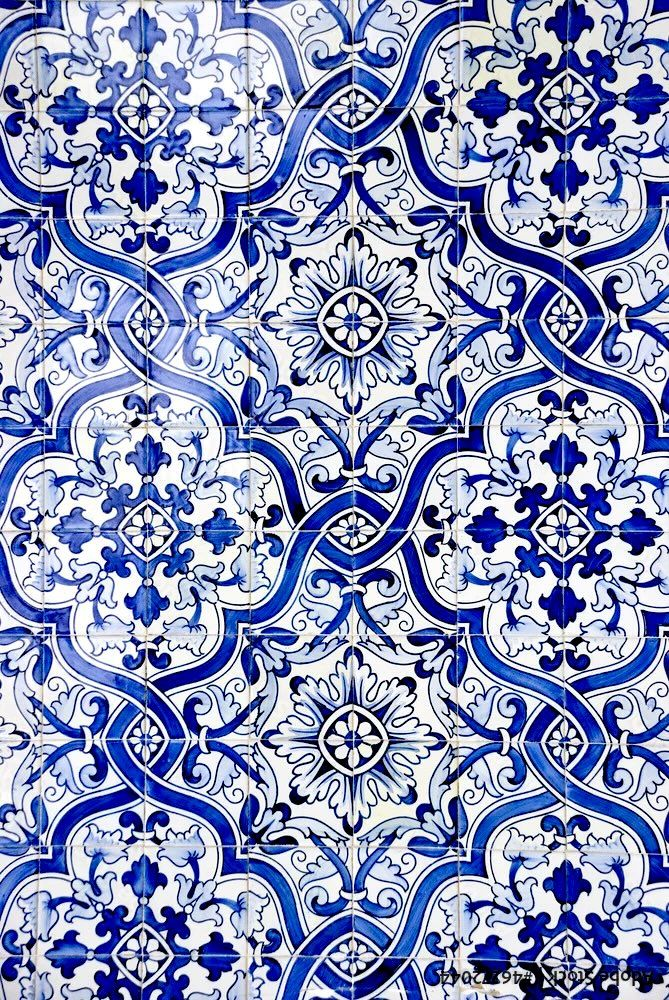
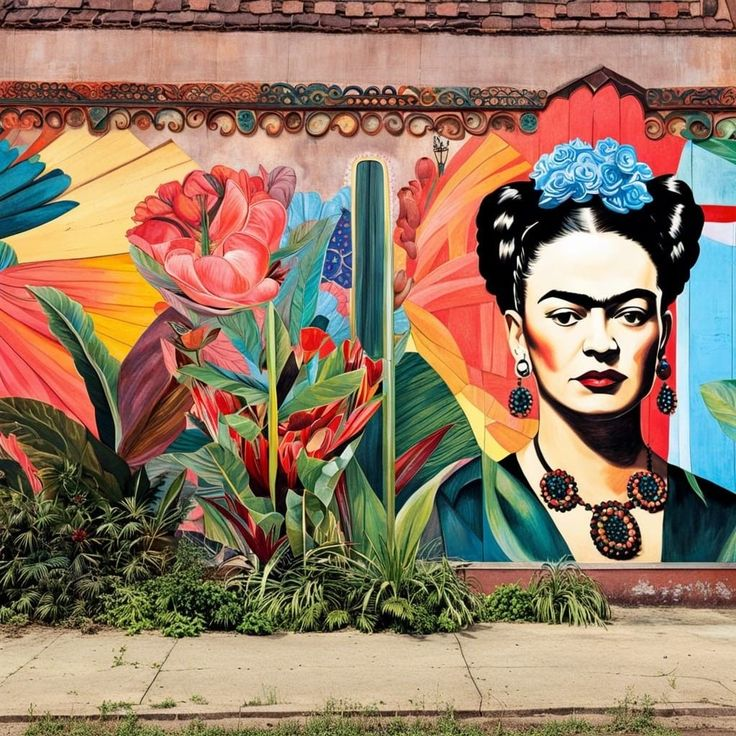
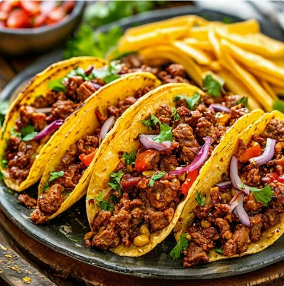
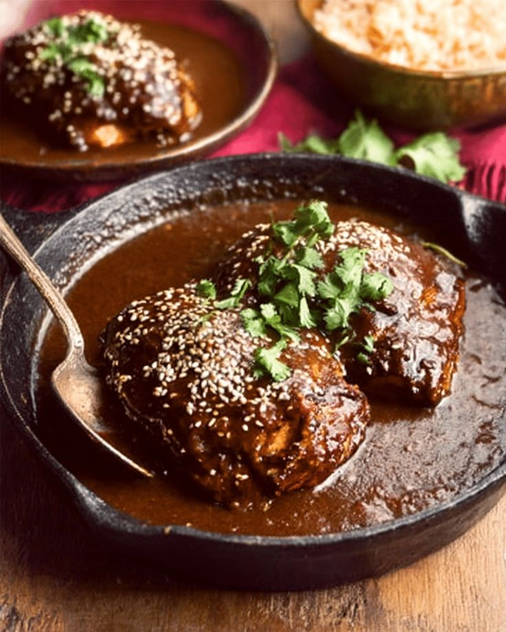

Reportagem — Cultura e Arte Mexicana
Conheça a Cultura e Arte Mexicana
Cultura Mexicana
A cultura mexicana é um domínio extremamente diverso que abrange vastas diferenças de identidade. A variedade de influências ao longo da história mexicana , desde as antigas civilizações maia e asteca até a presença dominante europeia, moldou e definiu o país fascinante que é hoje. A cultura mexicana é produto do processo de fusão de práticas e tradições indígenas com a presença colonial espanhola, que teve um impacto tão profundo em todos os aspectos da vida. Ao longo da história, o povo mexicano tem lutado constantemente para definir e promover a identidade mexicana. No entanto, com a grande instabilidade política, guerras com os Estados Unidos e a França e ocupação colonial, a sociedade mexicana tem lutado frequentemente para formar uma identidade coesa. Como resultado, a arte e a literatura mexicanas também tiveram uma história um tanto tumultuada. Há uma extensa coleção de edifícios maias e astecas lindamente preservados, e muitas de suas tradições foram mantidas. No entanto, com os efeitos da colonização, grande parte da literatura mexicana tomou emprestado técnicas e ideias da Europa. Foi somente no período pós-revolucionário que as artes no México começaram a desenvolver suas próprias características únicas, que logo produziram algumas das figuras mais célebres da arte e da literatura internacionais. Quer você queira saber mais sobre a inspiradora Frida Kahlo ou o charme da música Mariachi, esta seção fornecerá informações fascinantes sobre o complexo mundo da cultura mexicana.Arte Mexicana
O artesanato é a melhor maneira de acessar a história e a cultura popular de um país. Cabe ao estilo, à matéria-prima e à técnica das artes plásticas definidas narrar os aspectos inerentes à construção da identidade cultural como, por exemplo, as influências étnicas, religiosas e artísticas. E essa perspectiva torna evidente o valor da arte na preservação da herança cultural. Nessa conjuntura, países historicamente colonizados não têm apenas características nativas, uma vez que incorporam o patrimônio cultural de seus colonizadores. Este é o caso do México ao integrar a produção artística originária, baseada na ancestralidade dos povos mesoamericanos, às tradições espanholas. Esse cruzamento entre culturas é o grande diferencial da arte mexicana que abre mão do pedestal intocável de obra de arte para dialogar com mais proximidade junto ao mundo através dos objetos decorativos. Desta forma, os artesanatos mexicanos, produzidos em grande maioria com barro preto ou marrom, trazem a essência do México para dentro de casa a fim de proporcionar ao ambiente maior interesse visual.

ARTE EM CERÂMICA: ÁRBOL DE LA VIDA E LA CATRINA
Do solo rico em minerais surge a argila, uma das matérias-primas mais utilizadas no artesanato mexicano, que expõe com tamanha grandeza o melhor da cultura do México. Abraçando desde objetos utilitários à expressamente decorativos, com tonalidades que variam de barro marrom a negro, a arte cerâmica oferece à decoração de interiores uma mistura de símbolos e tradições culturais como fator diferenciativo. É o caso da Árvore da Vida (Árbol de la Vida), símbolo da bíblia católica, religião inerente às crenças espanholas incorporadas às tradições indígenas ceramistas dos nativos do México. Ao se apropriar dessa influência religiosa, os artesãos de Metepec, tradicional Terra do Barro, mantêm vivo o artesanato de barro enriquecido de patrimônios culturais como a figura da caveira mexicana La Catrina. Esta criação do artista mexicano José Guadalupe Posada, considerada símbolo do Dia dos Mortos, é, antes de tudo, uma crítica social sobre a desvalorização da cultura indígena e da igualdade entre classes sociais diante da morte. A Árvore da Vida com Catrina, simboliza, portanto, o ciclo da vida que todos vivenciam, sem distinção social ou cultural.
ARTE SACRA: PIÑATA EN FIESTA DEL NACIMIENTO
A arte sacra, com influência religiosa, é outra categoria de artesanato com forte expressão na cultura mexicana. Ela engloba desde tradições ancestrais baseadas nas crenças indígenas mesoamericanas até as espanholas como a religião católica. Nesse âmbito, cabe aos artesãos a escolha do tema ou da mistura dos mesmos para fazer da arte religiosa uma decoração enriquecedora e exclusiva. A escultura de barro da Piñata (Pinhata ou Pichorra) é um destes artifícios para transmitir a riqueza cultural mexicana e manter a originalidade como fio condutor do ambiente. O artesanato comemorativo de origem chinesa, inicialmente associado à celebração da quaresma e à libertação dos pecados, foi estabelecido no México por meio das missões jesuíticas e hoje se mantém como elemento-chave das principais comemorações – particulares e universais. O Natal (Navidad ou Nacimiento de Jesus) é uma dessas festividades-temas, e nesta obra de arte de Cecilio Sanchez preenche detalhe por detalhe da Pinhata Mexicana feita à mão. A profusão de ornamentações e cores também é explorada na arte efêmera de papel machê que é oca e preenchida de doces para ser destruída como símbolo de boa sorte.

ARTE HISTÓRICA: ESTANHO E AZULEJO TALAVERA
A alma da cultura espanhola, assim como da Asteca e da Maia, é manifestada em diferentes tipos de artesanatos mexicanos e artes decorativas. O espelho com moldura de estanho perfurado e azulejos coloridos Talavera é uma dessas artes históricas. O espelho decorado é desenvolvido à partir da tradição ceramista de Talavera de la Reina, município da Espanha considerado a Cidade da Cerâmica. Ele deixa de lado o foco na utilidade de refletir para dar o protagonismo à larga moldura colorida totalmente artesanal com técnicas do século XVI. Os padrões coloridos e diversificados dos azulejos de cerâmica Talavera, também conhecida como Maiolica, são vitrificados e dão o toque especial à peça junto aos desenhos entalhados no estanho. O metal é, por vezes, envelhecido e tem padrões perfurados com o mesmo estilo da pintura artística da cerâmica que reflete as tradições e as influências artísticas dos artesãos mexicanos.

POTTERY: OBJETOS EM CERÂMICA DE PAQUIMÉ
O cenário artístico decorativo mexicano revela que as maiores relíquias do Sítio Arqueológico de Paquimé são suas excêntricas cerâmicas com desenhos étnicos. Estes artefatos históricos deixados pelos povos pré-colombianos no reputado Patrimônio Mundial da Unesco, deixam intrínseco o domínio da arte ceramista, que tem especial produção de vasinhos decorativos.
Desenvolvidos em Casas Grandes, antigo centro cultural e artístico do Estado mexicano Chihuahua, os vasos de cerâmica artesanal são divididos em dois estilos principais, conforme as pinturas cromadas (Ramos Polychrome e Babicora Polychrome), que se diferem no destaque das cores dos grafismos. A cerâmica policromada se difere ainda pelas paredes finas das peças que contemplam os formatos inovadores com mais delicadeza.
O estilo geométrico dos desenhos e das formas dos vasos de cerâmica Paquimé aponta o apreço pictórico e a riqueza iconográfica, extremamente simbólica, das peças. Ele também deixa transparecer as figuras da fauna e da flora de Chihuahua sem obviedade, facultando à decoração um viés étnico bastante criativo e original.

ARTE EM BARRO: ESCULTURA DE BARRO NEGRO OAXACA
A cerâmica Oaxaca é marcada pelo barro preto brilhante e os detalhes vazados no corpo das peças.
A cor escura com brilho metálico é o que transforma a luminária de barro negro de Oaxaca em verdadeiras peças exclusivas para a luz de velas. Ela é obtida através das propriedades especiais da argila da região somadas à técnica de polimento, anterior à queima do suporte para vela, com fumaça preta espessa.
A arte ceramista tem o domínio artístico especialmente notório nos detalhes vazados. Os desenhos abstratos são acentuados com a luz quente da vela, quebrando a aparente frieza do barro preto e deixando os feixes da iluminação com velas invadir o ambiente, tornando-o mais bonito e acolhedor.

Arte do Muralismo Mexicano
O Muralismo é um movimento artístico que surgiu no México, no início do século XX, criado por um grupo de intelectuais pintores mexicanos, após a Revolução Mexicana, reforçado pela Grande Depressão e pela Primeira Guerra Mundial.
Principais Artistas Muralistas
Principais Artistas do Muralismo Mexicano
-
1 – DAVID ALFARO
David Alfaro Siqueiros (1896–1974) foi um dos maiores pintores mexicanos e um dos protagonistas do muralismo mexicano, ao lado de Diego Rivera e Orozco. Sua inovação técnica influenciou profundamente a pintura mural.
-
2 – DIEGO RIVERA
Diego Rivera (1886–1957) é um dos artistas mais reconhecidos do México. Passou anos na Europa, onde teve contato com grandes nomes e desenvolveu o estilo que culminou em seus murais famosos.
-
3 – JOSÉ OROZCO
José Orozco (1883–1949) foi um dos maiores muralistas do México, combinando expressionismo, tradições mexicanas e referências renascentistas. Suas obras são consideradas marcos da arte moderna.
Culinária Mexicana
Nessa parte vamos falar sobre a deliciosa culinária mexicana. É rica e diversificada, com pratos suculentos como tacos, guacamole, mole poblano e pozole, utilizando ingredientes como milho, feijão, pimentas e abacate.
-
Tacos
Os tacos são uma comida tradicional mexicana, constituídos por uma tortilha (de milho ou farinha), que pode ser dobrada ou enrolada e recheada com diversos ingredientes. -
Guacamole
O guacamole é uma pasta mexicana feita com abacate, cebola, pimenta, coentro e suco de limão. É um acompanhamento muito popular e versátil na culinária internacional.
-
Mole Poblano
O Mole Poblano é um dos pratos mais tradicionais do México, originário de Puebla. É um molho espesso e complexo feito com pimentas secas, especiarias e chocolate amargo, resultando em um sabor equilibrado entre notas picantes, terrosas, frutadas e levemente doces. -
Pozole
Pozole é um guisado tradicional feito com milho nixtamalizado e carne de porco ou frango. É servido com acompanhamentos como alface, repolho, rabanetes, cebola, coentro e limão, que são adicionados ao prato na hora de servir para realçar o sabor.